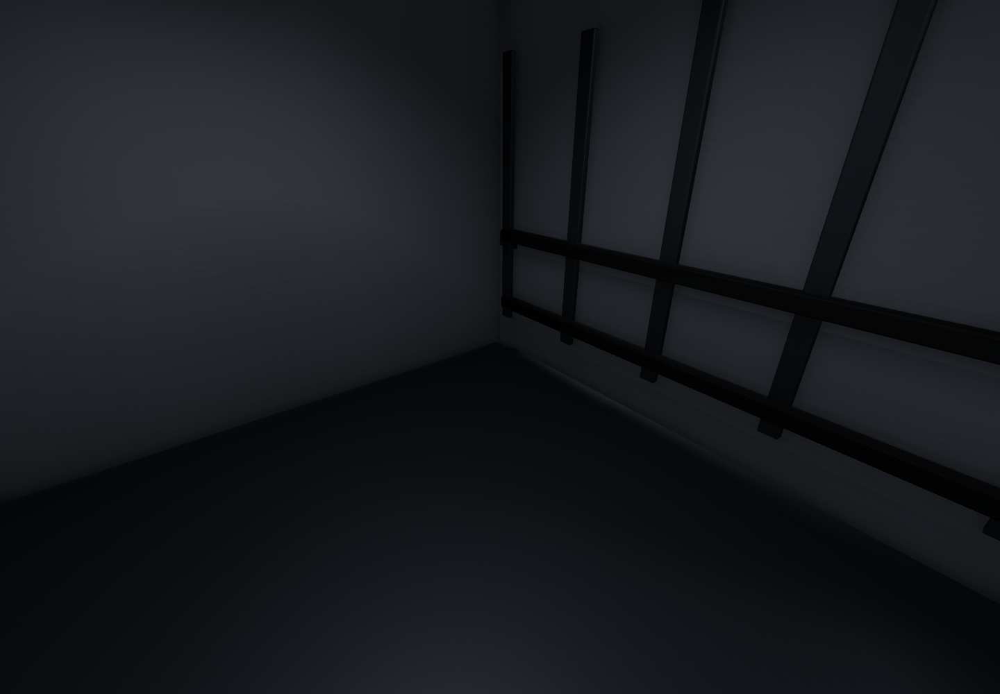

2026-11-09 · 송예찬 · Unity 네이티브 카메라, 전후 동일 시점
B5/B4 바닥 패턴과 화물 사용감, 기록대 4곳 보강. 작업등 36개와 추가 설비 55개의 충돌 형상 보수. B5 128 / B4 331 경로 및 E02·C02 국소 통행 검사 통과.
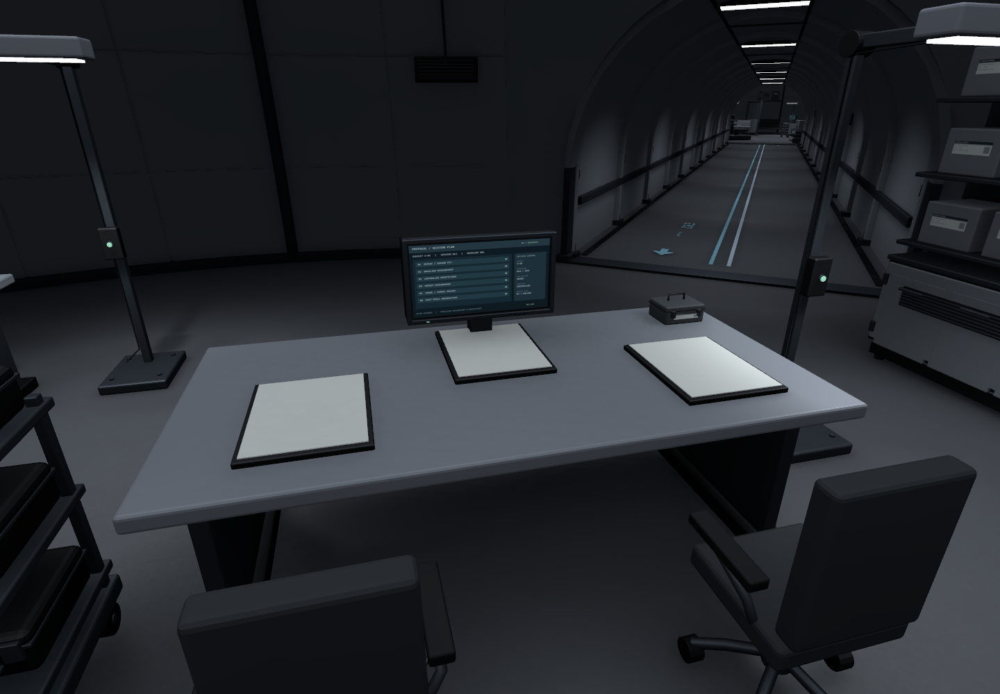
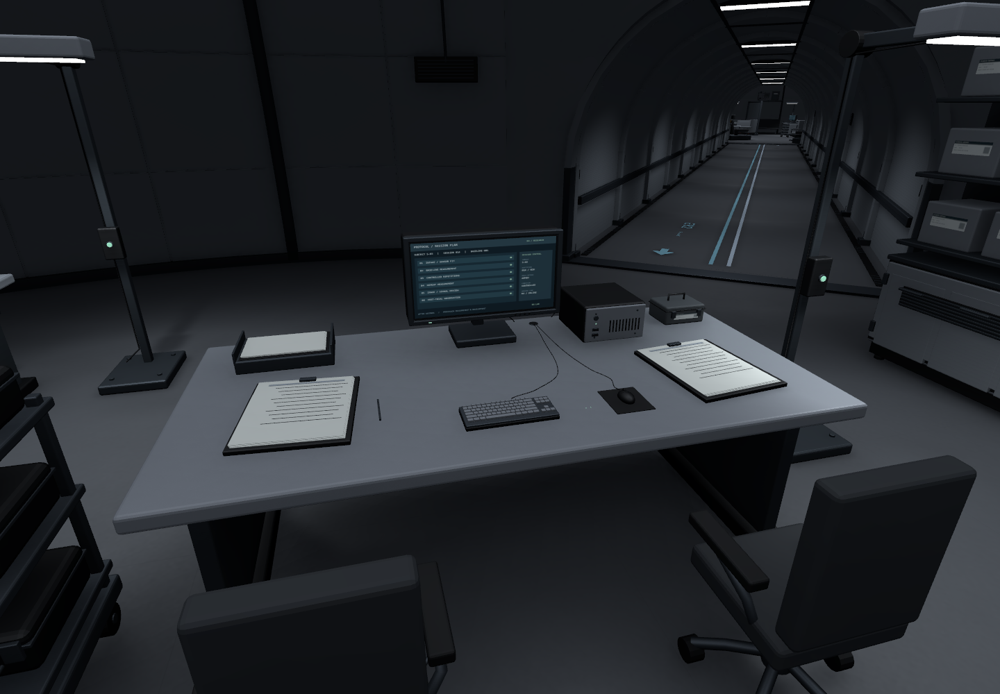
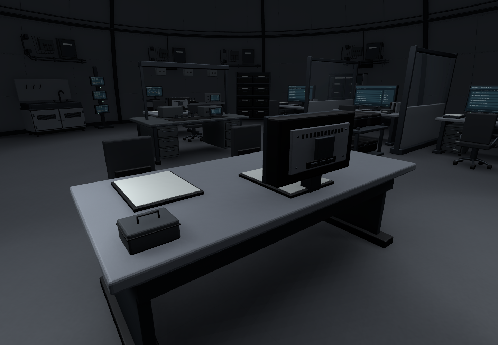
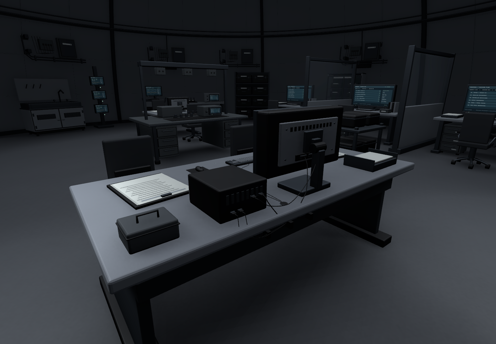
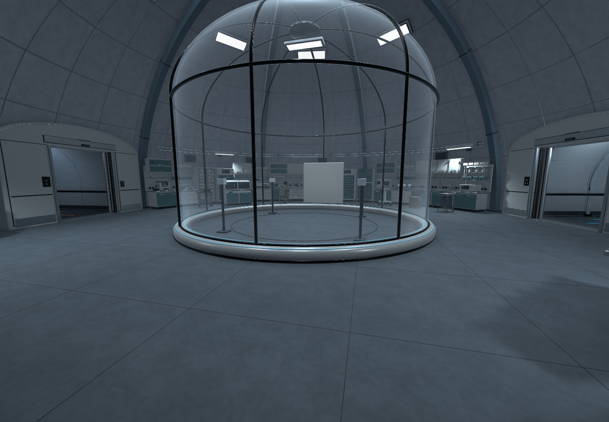
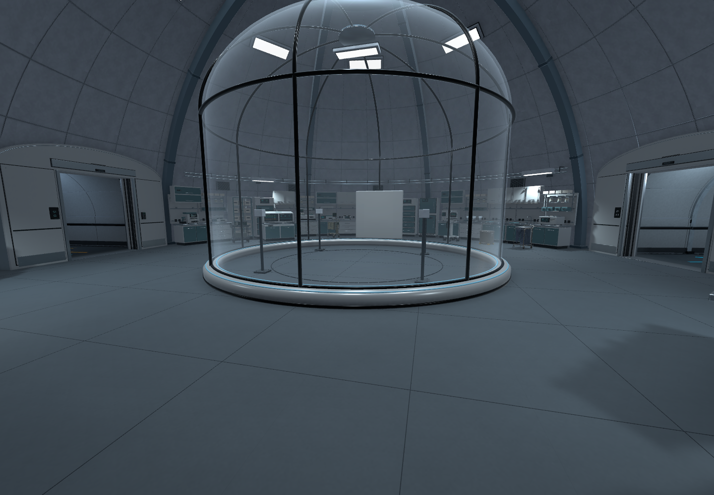
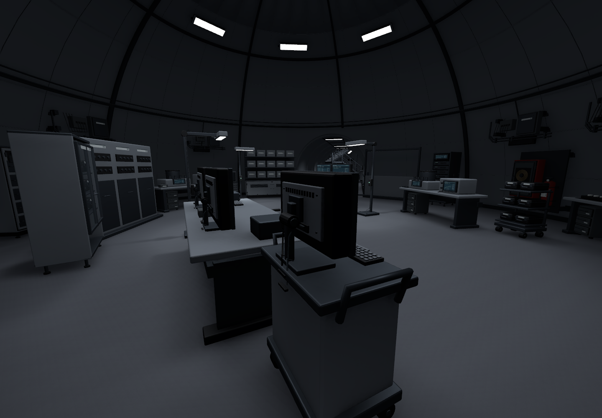
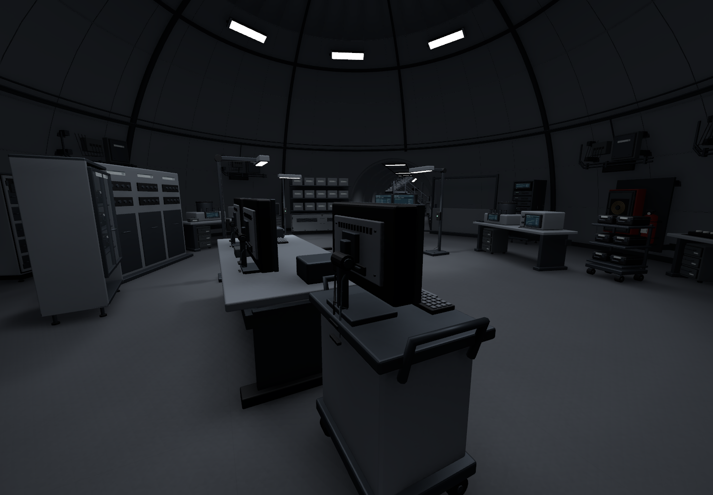
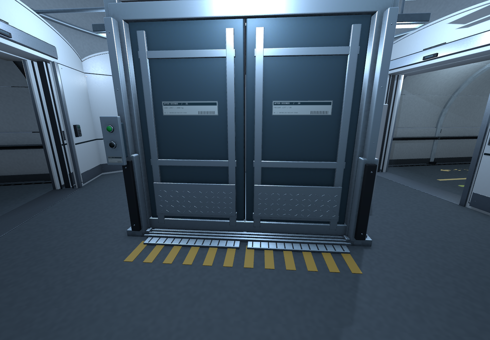
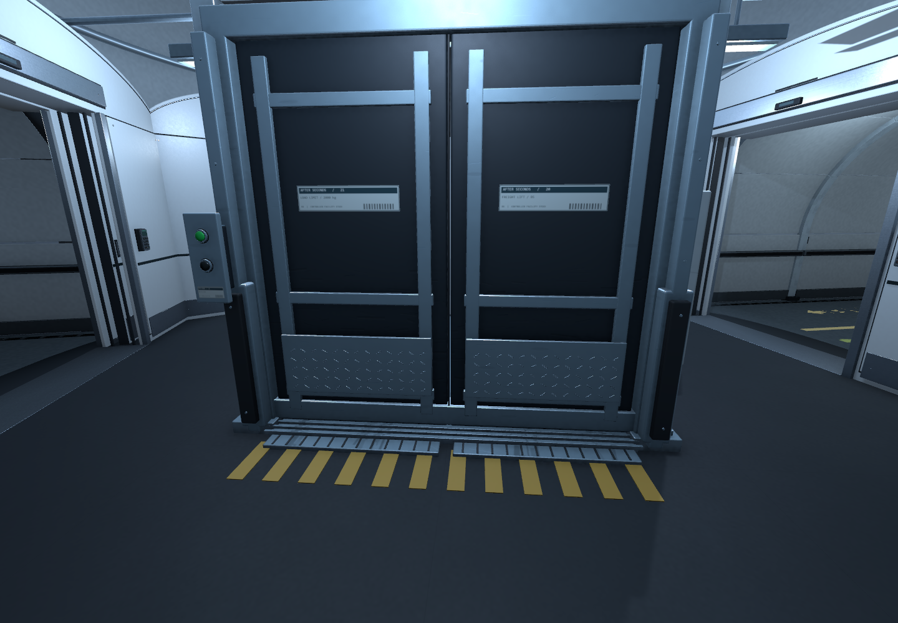

바닥은 기존 회색 톤 안에서 표면감만 더했다. 충돌 보수는 보이는 설비 형태와 빈 공간을 구분하며, 게임 기능·문/승강기 동작은 이번 범위에 포함하지 않는다.